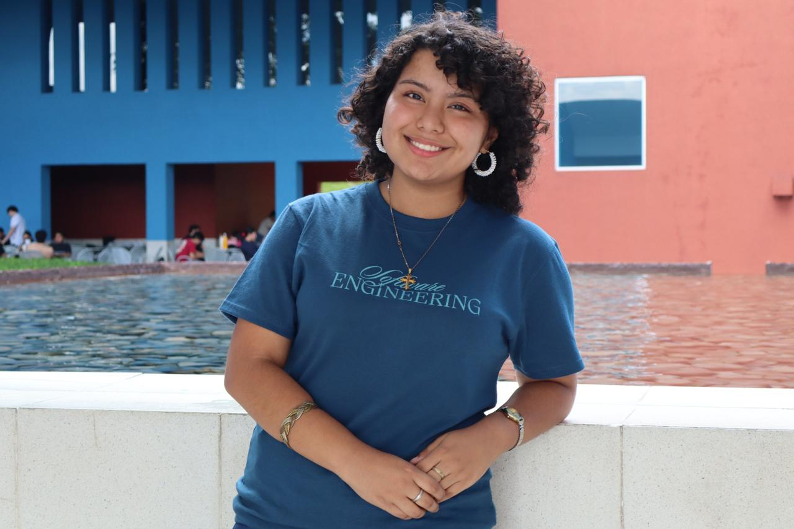
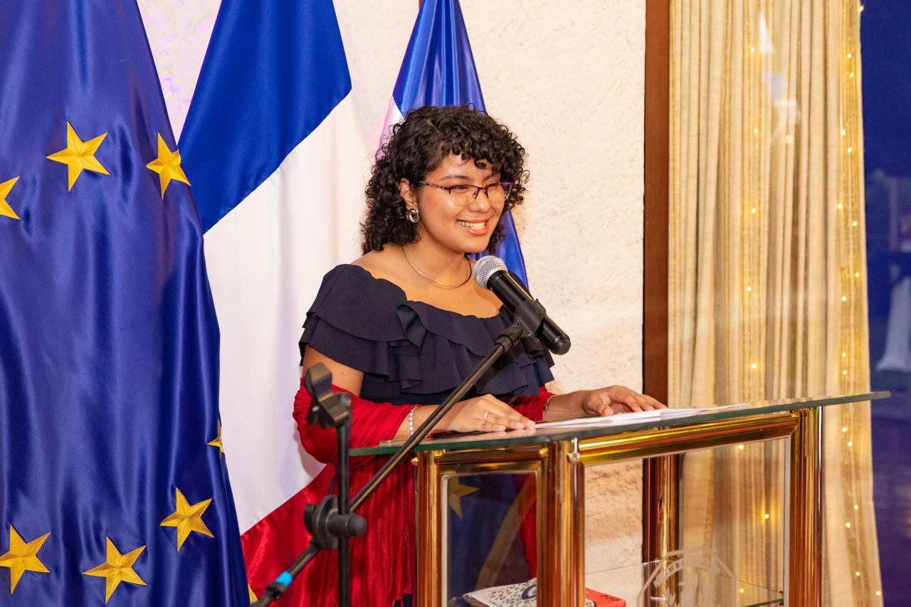

Colegio Montessoriano
Desde pequeña estudié en el Colegio Montessoriano, una etapa que marcó mis primeros años de aprendizaje.

Estudiante de Ingeniería en Software | ESEN
Mi nombre es Abigail Huezo y soy estudiante de Ingeniería en Software en la Escuela Superior de Economía y Negocios (ESEN), en El Salvador.
Actualmente estudio Ingeniería en Software en la ESEN, donde he descubierto que la tecnología también puede ser una herramienta para conectar ideas y personas. Además de mi formación académica, he participado en actividades relacionadas con liderazgo, tecnología, comunicación y proyectos estudiantiles.
Uno de mis intereses es encontrar ese punto donde la tecnología, los negocios y las personas se encuentran. Me gusta aprender cosas nuevas, asumir retos y participar en proyectos donde pueda aportar tanto desde el lado creativo como desde la organización y la comunicación.
Desde pequeña estudié en el Colegio Montessoriano, una etapa que marcó mis primeros años de aprendizaje.
Ingresé en tercer grado y permanecí hasta finalizar mi bachillerato. Durante estos años descubrí poco a poco uno de mis mayores intereses: comunicarme y trabajar con otras personas.
Actualmente cursando la carrera de Ingeniería en Software.
Me gusta especialmente hablar en público, la oratoria y la organización de eventos. He tenido la oportunidad de participar en:
